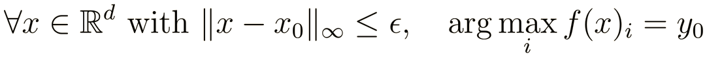
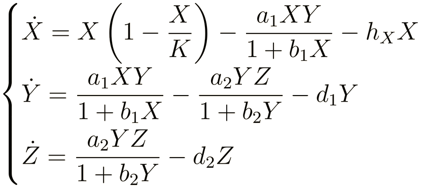
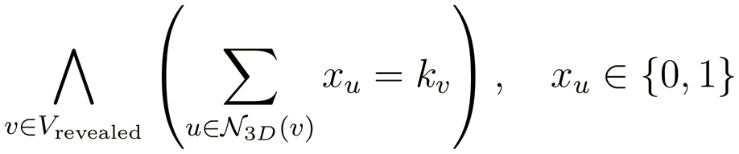

Neural networks can easily misclassify road signs under imperceptible noise or physical stickers. This project compares standard training against adversarial training on the GTSRB dataset, going beyond heuristic attacks (PGD) to provide exact mathematical safety guarantees.

Using the Marabou SMT solver, I formally verified output invariance within continuous L∞ perturbation bounds and evaluated certified robustness against physical adversarial patches on STOP signs.
Investigation of deterministic chaos and bifurcation phenomena in a continuous three species food chain governed by the Hastings Powell ODE system with Holling type II functional responses.

Analyzes strange attractors, Lyapunov exponents, bifurcation cascades under carrying capacity K, and chaos suppression via linear prey harvesting (hX).
A three-dimensional Minesweeper game built in Python and Ursina (with Marco Carmignano). Includes an automated exact deduction engine powered by the Z3 SMT solver, which translates game boards into pseudo-boolean constraints to formally prove safe moves and mine locations.

ezone is a minimalist desktop music player that transforms your local digital audio collection into an interactive, vinyl inspired record experience.